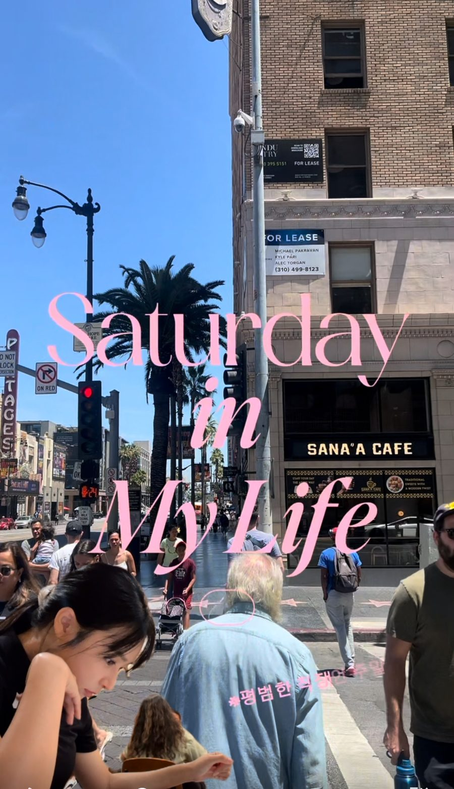
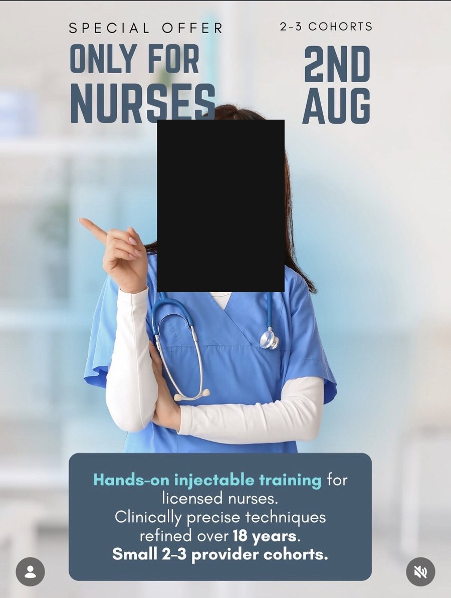

I am a bilingual Performance & Growth Marketer who turns data into scalable revenue. My path hasn’t been a linear corporate track—it has been forged by running my own business, coordinating large-scale operations, and managing conversion funnels directly, such as scaling lead rates by $4\times$ against major agencies. I combine data analytics, CRM automation, and UI/UX design/technical execution to build and scale high-converting acquisition pipelines.
LanguagesKorean & English
Based inLos Angeles, CA
StatusActively job searching
Certified inUI/UX DesignComputer Literacy Level 2
Tools & platforms
Data & Analytics
ExcelXLSTATGoogle AnalyticsGoogle Ads
Project Management
Google WorkspaceClickUpNotion
Technical & Web
HTML/CSS/JSGitHubVercel
MY SKILLS
Four disciplines, one throughline.
01
Lead Generation
Funnel strategy, audience targeting, and conversion-focused landing page
design — built and iterated on performance data.
02
Data & Reporting
Pivot tables, statistical charting, and monitoring systems that flag what
actually needs attention.
03
Content & Creative
End-to-end social content production and creator partnerships, from brief
to final approval.
04
Bilingual QC
Native-level Korean and professional English — tone, nuance, and cultural
fit, not just translation.
0×qualified leads vs. an outside agency
0companies tracked in a cross-border data program
$0Managed $80K/yr operations 100% remotely with <1 hr/day via automated digital workflows.
0%bilingual fluency — Korean & English
MY WORK
Five key projects showcasing hands-on performance marketing, data analysis, and cross-border execution.
01 · Telehealth Lead Generation
A funnel that outperformed a major agency — on a smaller budget.
My manager wanted broad targeting to maximize traffic. Competitor
research told a different story: our real differentiator was on-site, 1:1 provider care
— something most telehealth competitors couldn't offer, at a premium price point. I made
the case, backed by data, that broad targeting was pulling in price-sensitive traffic
that didn't fit a premium service. We rebuilt the funnel around targeting people willing
to pay for hands-on care — a four-stage flow where information unfolds step by step
instead of overwhelming a visitor on one page. The result: qualified leads at
4× the rate of a major outside agency running a comparable paid campaign
for the same company.
Turning automation into conversations that convert.
Behind every funnel is a follow-up system. These are the automated
email and SMS workflows I built to nurture leads after they left the landing page,
alongside creative examples from the email and social campaigns I've written and
designed — brand names blurred throughout for client confidentiality.
Key Performance Metrics
• Conversion Scaling: "Achieved a multi-fold increase (nearly 12x) in lead conversion through automated nurturing funnels, significantly outperforming the pre-automation baseline."
• Operational Workflow Efficiency: "Replaced manual outreach with a fully automated funnel system that manages end-to-end communication—from initial touchpoints to automated scheduling. This eliminated manual bottlenecks and allowed the process to scale smoothly."
• Analytics Baseline: "Scaled marketing analytics from a near-zero tracking baseline to a fully systemized, data-driven pipeline (0 to 100) that provides real-time funnel visibility."
Strategic Data-Driven Optimization
"Integrated landing pages with CRM platforms to create a 'Single Source of Truth' for all lead data. By analyzing the full funnel—from initial interest to automated booking—I identified drop-off points and optimized the automated sequences, ensuring high-intent leads are captured and nurtured without manual intervention."
Monitoring 450+ companies from a single spreadsheet.
I supported a government-backed program connecting Korean export companies with outside marketing agencies—the companies received subsidies specifically to use agency services, and I sat in the middle, managing reimbursement data and tracking agency performance to ensure deliverables were met. Using advanced Excel for budget monitoring (such as conditional formatting to visually flag budget pacing) along with pivot tables and XLSTAT, I efficiently handled 450+ companies' data. Beyond financial tracking, I managed agency check-ins, collected feedback through post-program surveys from participating companies to improve future iterations, and helped draft quarterly logistics reports in Korean for official publication.
At a medical group in Korea, I owned the TikTok and Instagram
content pipeline — producing content in-house while also sourcing and managing
partnerships with outside influencers and UGC creators, from brief through revisions to
final approval. Running in-house production and creator collaborations side by side gave
a steady volume of content without approval delays, and real data on which format
actually performed better. The clips below are independent content I've written, shot,
and edited on my own channels — shown as a sample of format and pacing, since client
work stays with the client.
Short-form, card-flip format

Vlog-style content, LAPaid ad, carousel format (brand blurred)

Paid ad, static format
05 · UI/UX Design
The technical layer behind the funnels.
Three redesign projects completed during a UI/UX program — roughly 500
hours, attended on-site, with 98% attendance — a motion/interaction sandbox, an
institutional site rebuild, and a homepage redesign that turned a confusing information
hierarchy into a clear, high-conversion layout. This is the same instinct — structure and
clarity drive better outcomes — applied earlier to the funnel work in Project 01. It's why I
can build a landing page with AI-based tools and still go in and adjust the code directly
when it needs precision.